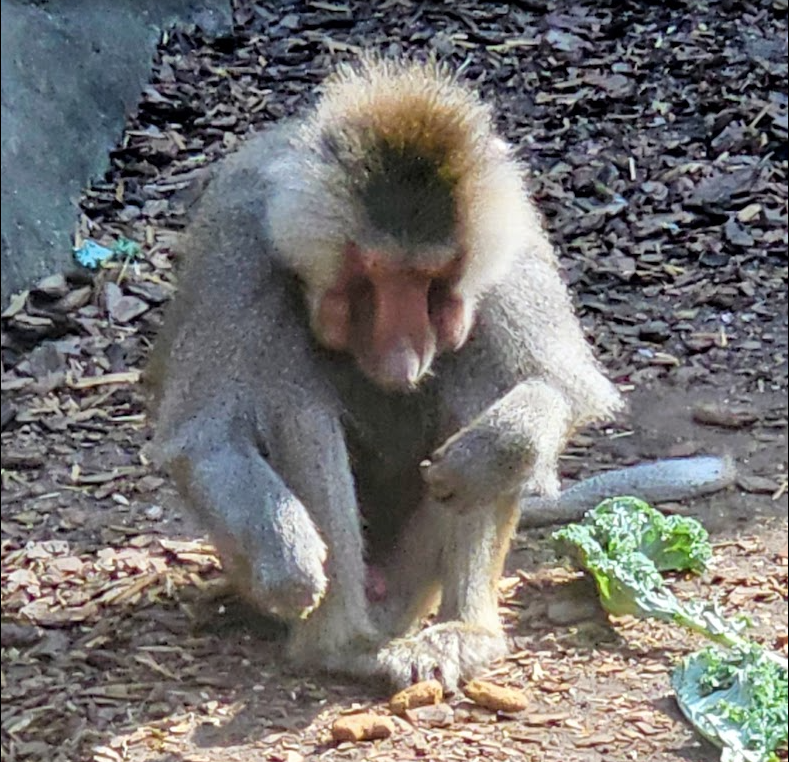

Hamadryas Baboon
Papio hamadryas
Description
A Hamadryas Baboon crouched on a dirt and wood-chip ground, possibly at a zoo. The animal displays the species' characteristic mane of grey-brown fur around the head and shoulders. Its pink-red facial skin is visible as it hunches forward. Leafy greens and scattered food fragments are visible nearby.